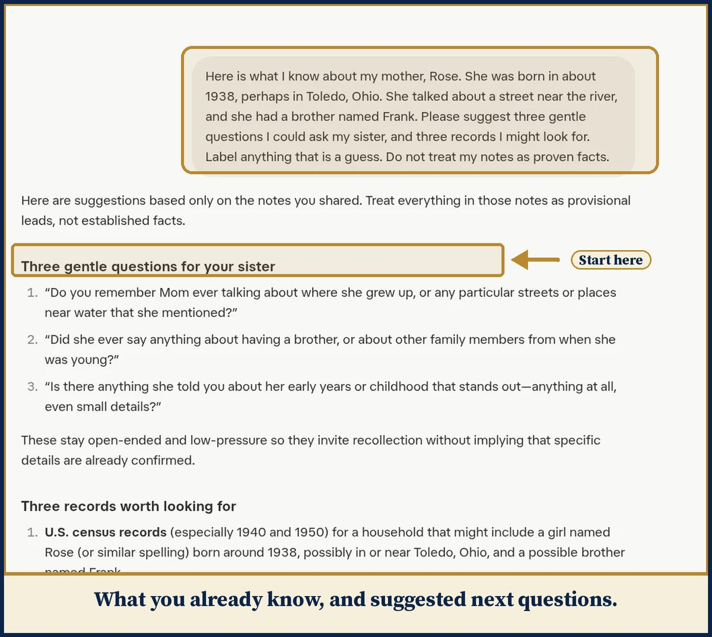
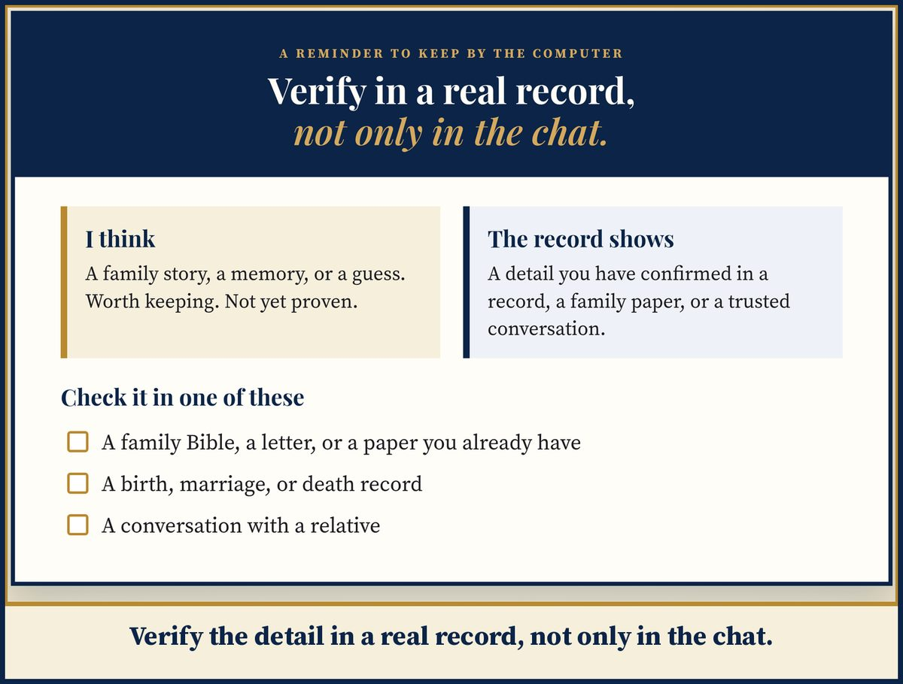

Lesson 7 of 8
Explore your family history, then check the records
In Lesson 6, we shaped a memory and saved it. Today we will use Grok to organize what you already know about your family history, and then confirm the facts in real records.
Start with what you know. Grok can help you plan the next step. It cannot replace a record.
Write down what you already have
Before you ask Grok anything, jot a few notes about one relative: a name, places they lived, approximate years, and a story you have already heard. Rough notes are fine. “I think” is a perfectly good starting point.
How Grok can help
You can ask Grok to:
- Suggest gentle questions to ask a relative.
- Organize a messy set of notes.
- Propose a next research step, such as a type of record to look for.
Here is a request you can adapt.
A request you can adapt
Here is what I know about my mother, Rose. She was born in about 1938, perhaps in Toledo, Ohio. She talked about a street near the river, and she had a brother named Frank. Please suggest three gentle questions I could ask my sister, and three records I might look for. Label anything that is a guess. Do not treat my notes as proven facts.

Then check the records
Always check facts against real records. A free place to start is FamilySearch. It is one tool, not the only one. A family Bible, a letter, a death certificate, or a conversation with a relative can also confirm a detail.
On the page, keep this reminder in mind: verify in a record, not only in the chat.

Family-history fact-check
Start with what you know. Let Grok help you plan. Confirm the facts in real records.
What I already know
Name
Places
Dates (even if approximate)
Label it clearly
- I think: a family story, a memory, or a guess. Worth keeping. Not yet proven.
- The record shows: a detail you have confirmed in a record, a family paper, or a trusted conversation.
One detail to verify next
Where I will check it (a record, a paper, or a person)
A free place to start is FamilySearch, at familysearch.org. It is one tool, not the only one. Do not enter living relatives’ private details into Grok or into a public family tree. We are not affiliated with or endorsed by FamilySearch.
A brief warning
Be wary of “instant family crest” offers, or messages that say “we found your inheritance.” Real research is slower. It does not start with a demand for payment or secrecy.
A safety note
Do not enter living relatives’ private details into Grok or into a public family tree. That includes full birth dates, addresses, phone numbers, and financial information. Be wary of anyone who charges a fee to “release” a family fortune or a coat of arms. We are not affiliated with or endorsed by FamilySearch.
Try it today
Write what you know about one parent, one older relative, or another family member: a name, places, and dates, even if they are approximate. Ask Grok for three gentle questions you could ask a family member, or three records you might look for. Then verify one detail in a record, a family paper, or a conversation, before you treat it as fact.